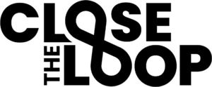

Trade Mark Journal No.2025/013 28 March 2025
WO0000001833372 (16,17,22,35,39,40,42)
Office of origin: Australia
Date of International Registration:19 November 2024
Date of designation in the UK:
19 November 2024

International priority date claimed: 29 October 2024
(Australia)
(2494361)
- Class 16
- Bags made of paper for packaging; bags made of plastics for packaging; packaging materials made of paper; packaging materials made of plastic.
- Class 17
- Semi-finished plastic products made from the recycling and reprocessing of waste materials and other products; extruded products made primarily from plastics; plastic substances, (semi-processed); semi-processed foams; plastics in extruded form, including plastics for use in manufacture; packing, stopping and insulating materials; plastic sheeting for agricultural purposes; plastic substances, semi-processed.
- Class 22
- Packaging bags (sacks) of paper or plastic for bulk storage and bulk transportation.
- Class 35
- Business consulting services that provide transformational strategies to companies wishing to move towards sustainability and socially responsible business practices, provided mainly to the consumer; preparation of business reports.
- Class 39
- Collection of post-consumer products which require materials recovery for recycling.
- Class 40
- Services in respect of recycling, transformation, processing, reprocessing or destruction of waste, scrap and other products and materials, including waste electrical and electronic equipment and materials; consultancy services in respect of treatment or processing waste, scrap and other products and materials; waste and recyclable material sorting services; reprocessing of waste services; waste recycling services excluding waste water recycling services; waste treatment (transformation) services; services in the treatment of material; forming or moulding of plastics.
- Class 42
- Product development; product development consultation; custom design of consumable product collection and recycling programs.
Close the Loop Technologies Pty Ltd
Representative: PHILLIPS ORMONDE FITZPATRICK, PO Box 323, COLLINS STREET WEST VIC 8007, AUSTRALIA